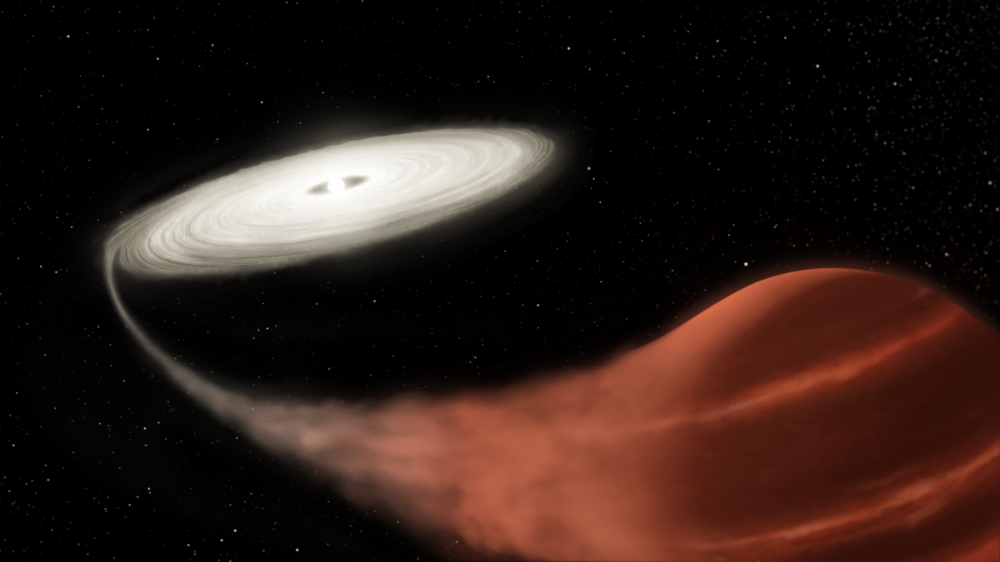

Research
Current research / Stellar astrophysics
Dwarf novae
I am a research assistant working with Dr. Michael Fausnaugh at Texas Tech University. My current research focuses on dwarf novae: interacting binary star systems in which a white dwarf accretes material from a companion star.
These systems undergo recurring outbursts as their accretion disks change state. Their changing brightness offers a window into the physics of accretion and stellar variability.
I bring my interests in astrophysical data analysis and scientific computing to the study of these variable systems.

Research operations / TESS
TESS imaging pipeline
I also help with operations for the Transiting Exoplanet Survey Satellite (TESS). Using the pipeline created by Dr. Michael Fausnaugh, I run image-processing workflows for difference imaging and generate reference and root-mean-square (RMS) images.
Difference imaging
Running the pipeline's difference-imaging workflow.
Reference images
Generating reference images with Dr. Fausnaugh's pipeline.
RMS images
Generating root-mean-square images as part of the imaging workflow.
Why dwarf novae?
Dwarf novae connect the behavior we observe in a star's light curve with the dynamics of an accretion disk. Studying their outbursts helps astronomers investigate how material moves through these disks and why their brightness varies over time.
For an introduction to these systems, see AAVSO's overview of cataclysmic variables.
Previous work
Master's thesis / August 2023–April 2024
GW Parameter Estimation without explicit use of Template Bank
My final-year master's thesis focused on estimating gravitational-wave parameters without explicitly using a template bank.
Krittika Summer Projects / IIT Bombay Astronomy Club
Gamma Ray Bursts SNR Analysis
This project examined detrending and signal-to-noise ratio (SNR) estimation for gamma-ray burst (GRB) light curves using data from the AstroSat CZTI instrument.
After preprocessing, we compared detrending based on means and medians of moving averages and a Savitzky–Golay filter. SNR estimates used Gaussian and Poisson noise fits, alongside estimates based on the noise mean and variation, to distinguish GRB signals from non-GRB events.
The work aimed to improve detection and classification reliability. Proposed next steps included testing fainter bursts and building a more general classification framework.
Project details: my LinkedIn profile.